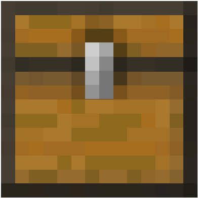
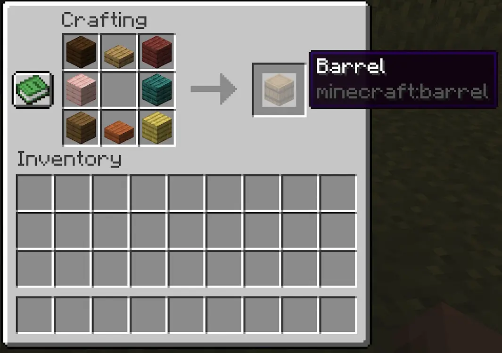

mesa de crafteo con 6
mesa de crafteo con 6  tablones y 2 losas..
tablones y 2 losas..
El barril es un bloque muy parecido al 
El barril se consigue principalmente en una mesa de crafteo con 6 tablones y 2 losas..

Tambien se puede conseguir en diversas estructuras.
 Hacha de cualquier material
Hacha de cualquier material